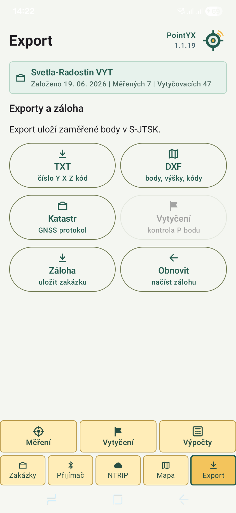

Měření bodů
Sběr bodů, kódování a ukládání do zakázek.
Android GNSS aplikace
PointYX spojuje GNSS přijímač, RTK korekce, měření bodů, vytyčování, mapu a export dat v jedné přehledné aplikaci.
Funkce
Sběr bodů, kódování a ukládání do zakázek.
Navádění na bod, tolerance a kontrolní přeměření.
Připojení externí antény přes Bluetooth a nastavení výšky.
Nastavení casteru, mountpointu a korekcí v terénu.
Mapové podklady, ortofoto a katastrické vrstvy.
TXT, DXF, GNSS protokol, záloha a obnova zakázky.
Aplikace
Rozhraní je stavěné pro mobil v ruce, práci venku a rychlou kontrolu důležitých údajů: fix, anténa, NTRIP, souřadnice a aktivní zakázka.
Export
Naměřená data lze exportovat do běžných formátů pro geodetické, stavební a kontrolní workflow.

Testování
Aktuálně připravujeme testování v praxi.